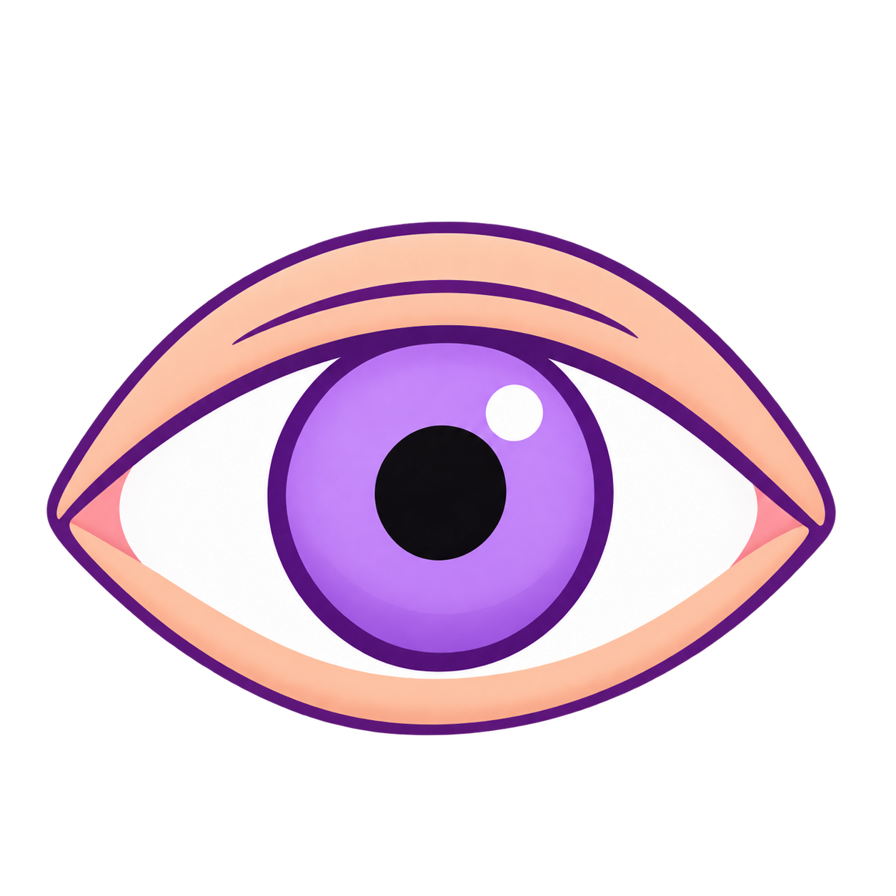
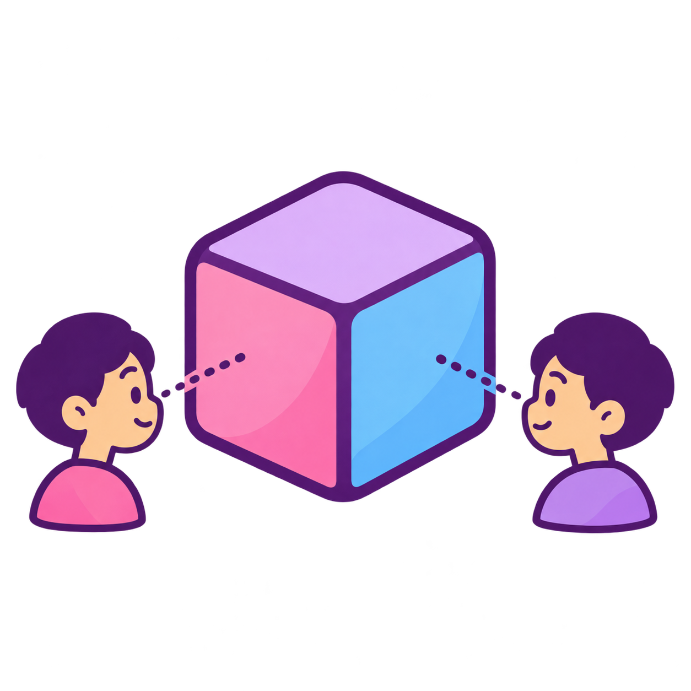
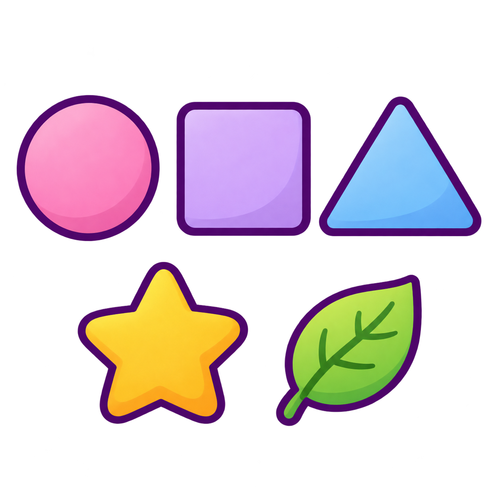
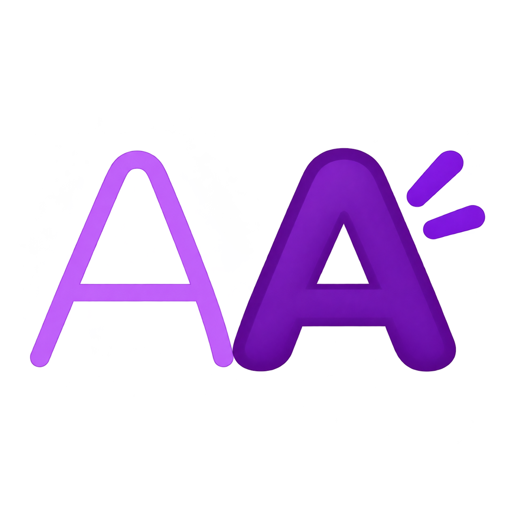
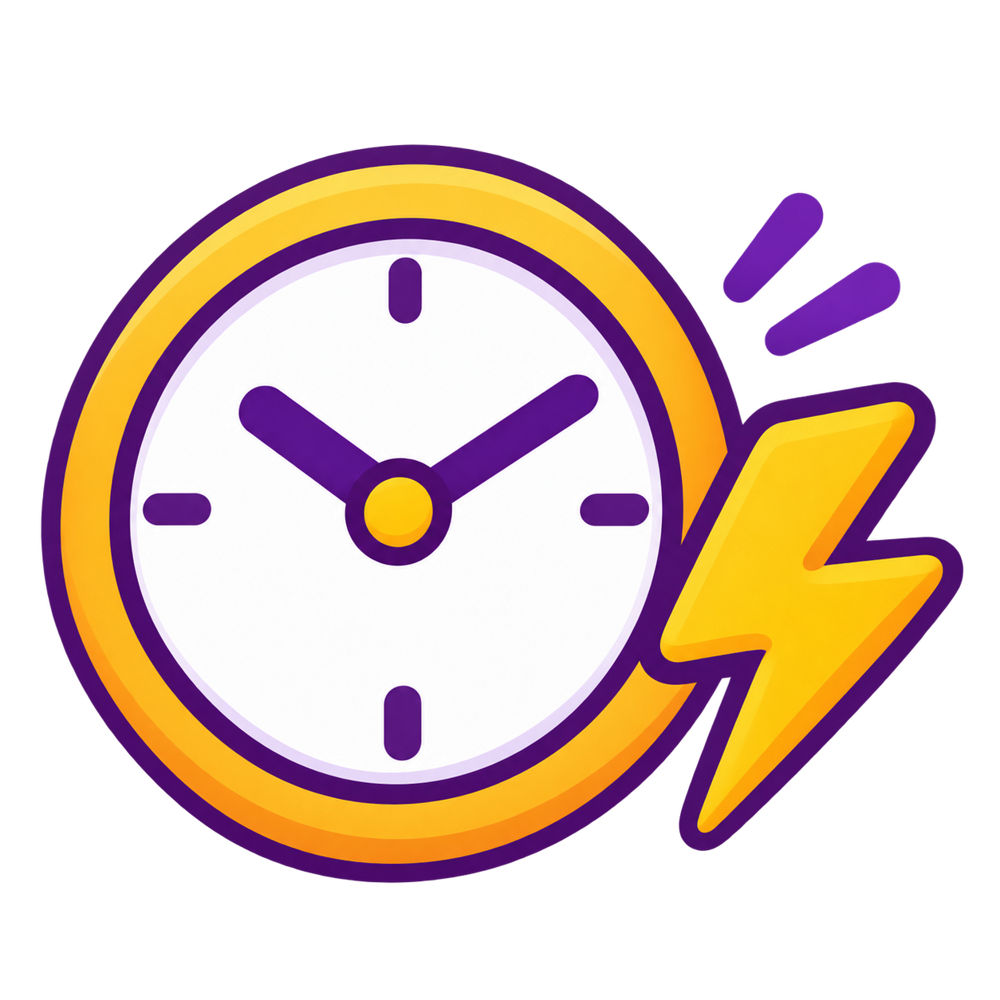
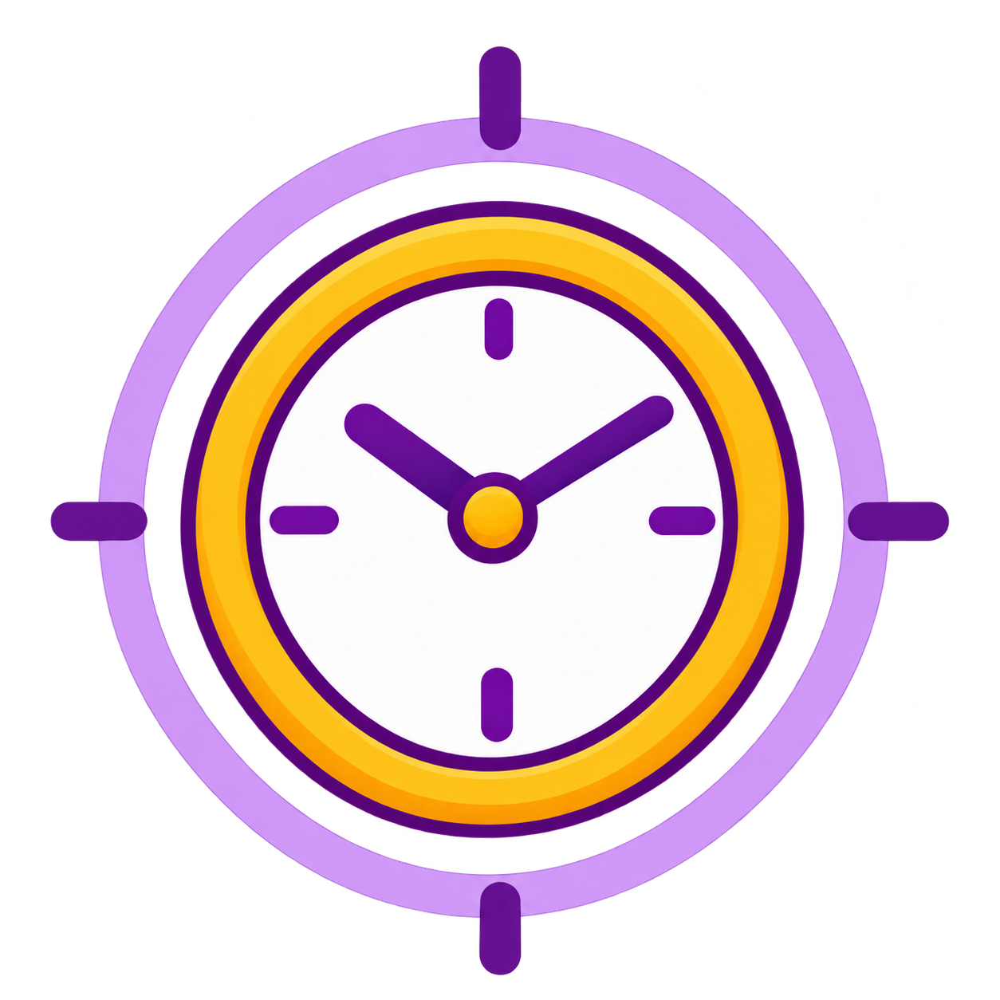
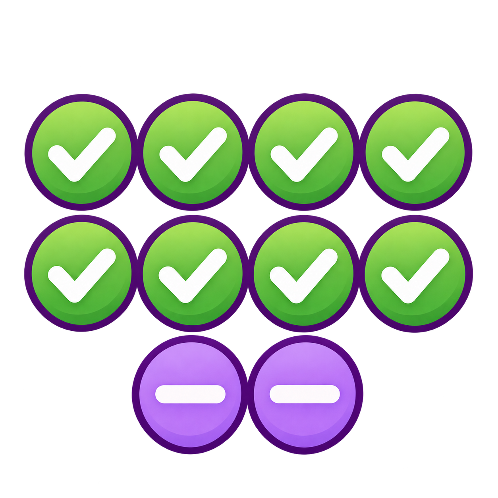
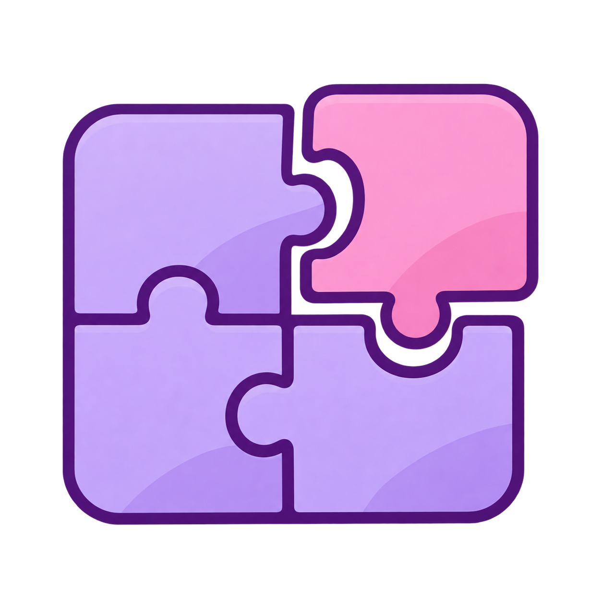
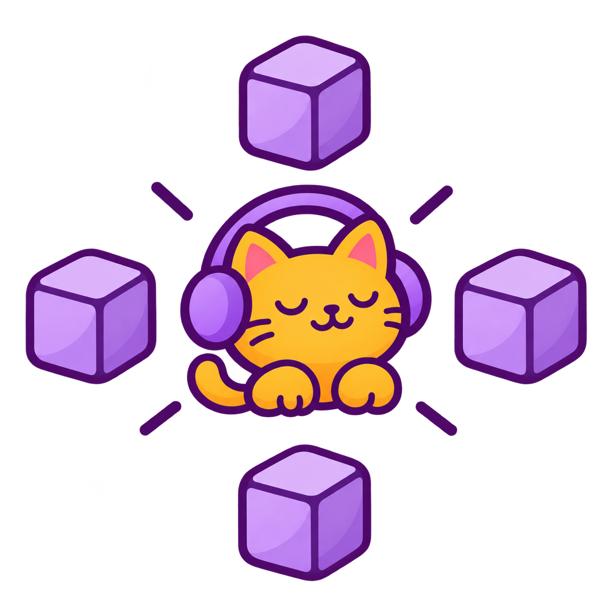
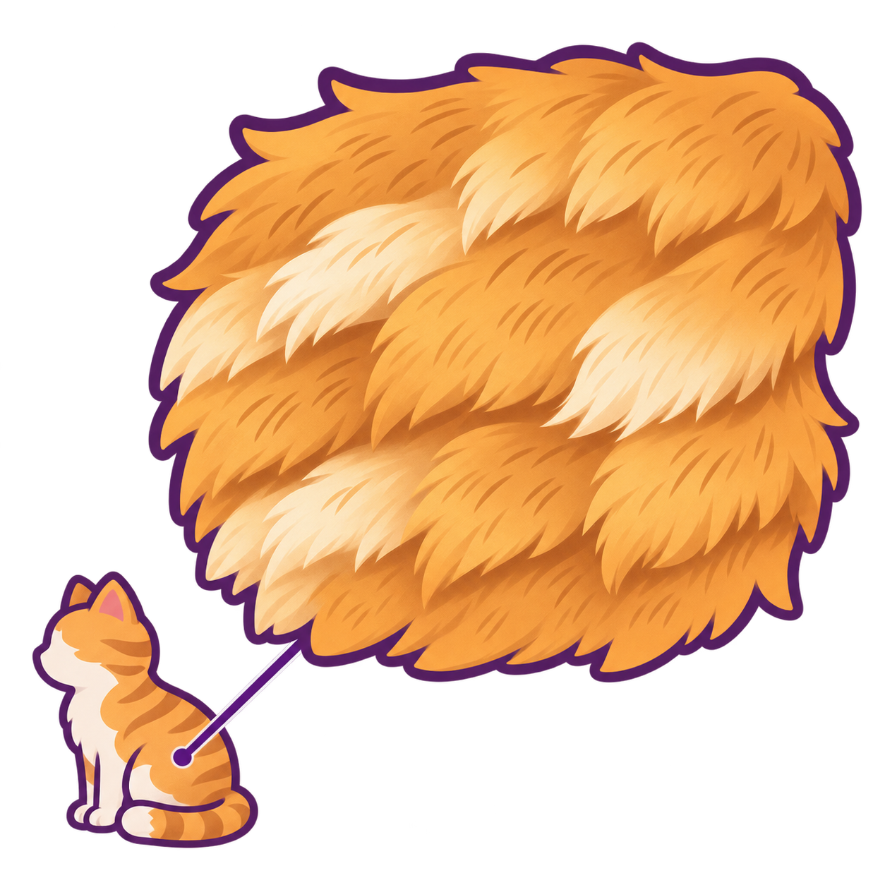

173 · To Correct Approved174 · Sword Approved175 · Which One Approved

176 · Eye Approved

177 · Way Of Seeing Replace later178 · Correct Approved179 · Puppy Approved

180 · Various Approved

181 · Bold Letter Replace later

182 · At Once Replace later

183 · Now Replace later184 · Few Approved185 · Atmosphere Replace later

186 · Generally Replace later187 · One Time Approved

188 · Part Approved189 · Yen (currency counter) Approved190 · Input Replace later

191 · Center Replace later

192 · Fur Approved193 · Eyeball Approved
yellow · #fff2c5
169 · Straight Line Approved170 · Form Removed from vocabulary171 · Other Approved172 · Method Replace later173 · To Correct Approved174 · Sword Approved175 · Which One Approved176 · Eye Approved177 · Way Of Seeing Replace later178 · Correct Approved179 · Puppy Approved180 · Various Approved181 · Bold Letter Replace later182 · At Once Replace later183 · Now Replace later184 · Few Approved185 · Atmosphere Replace later186 · Generally Replace later187 · One Time Approved188 · Part Approved189 · Yen (currency counter) Approved190 · Input Replace later191 · Center Replace later192 · Fur Approved193 · Eyeball Approved
pink · #fff0f5
169 · Straight Line Approved170 · Form Removed from vocabulary171 · Other Approved172 · Method Replace later173 · To Correct Approved174 · Sword Approved175 · Which One Approved176 · Eye Approved177 · Way Of Seeing Replace later178 · Correct Approved179 · Puppy Approved180 · Various Approved181 · Bold Letter Replace later182 · At Once Replace later183 · Now Replace later184 · Few Approved185 · Atmosphere Replace later186 · Generally Replace later187 · One Time Approved188 · Part Approved189 · Yen (currency counter) Approved190 · Input Replace later191 · Center Replace later192 · Fur Approved193 · Eyeball Approved
lavender · #f6efff
169 · Straight Line Approved170 · Form Removed from vocabulary171 · Other Approved172 · Method Replace later173 · To Correct Approved174 · Sword Approved175 · Which One Approved176 · Eye Approved177 · Way Of Seeing Replace later178 · Correct Approved179 · Puppy Approved180 · Various Approved181 · Bold Letter Replace later182 · At Once Replace later183 · Now Replace later184 · Few Approved185 · Atmosphere Replace later186 · Generally Replace later187 · One Time Approved188 · Part Approved189 · Yen (currency counter) Approved190 · Input Replace later191 · Center Replace later192 · Fur Approved193 · Eyeball Approved